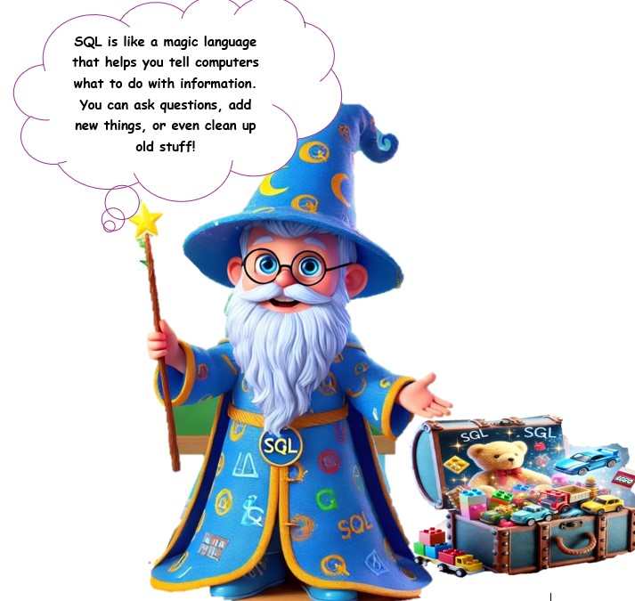
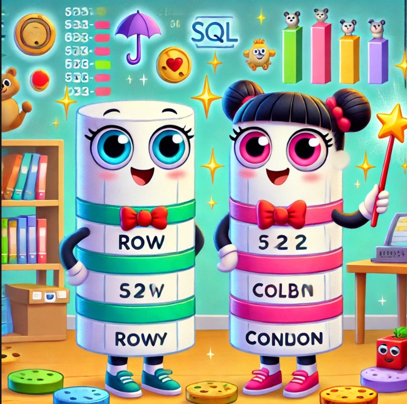

🎉 Welcome to "Magic Language for Computers: SQL!" 🌟
Today, we’ll learn how to use a special language called SQL to talk to computers and help them keep track of cool stuff—just like a magic spellbook for organizing your favorite things!
🎉 Welcome to the magical world of SQL! Meet Sammy, your friendly SQL wizard. Sammy will guide you step by step to learn the magic of SQL commands! 🎉
 🚀 Understanding Databases🚀🛠 A database is like a super-smart notebook that stores all kinds of information. Let’s create one together:
📚 **Imagine Your Magic Notebook!**
A database is like a magic notebook that keeps everything super organized. 🌟
Tables: Think of them as treasure boxes for your favorite things! 🧸🍕
Example: A box for "Favorite Foods" with pizza, tacos, and ice cream.
Rows : Each row is a special item, like your *yummiest dessert*. 🍦
Columns: These are the categories, like "Name" or "Type."
🎮 Let’s Play! Sort toys into rows and columns—drag your teddy bear, toy car, or puzzle into the right spots. Let's turn sorting into an adventure! 🚗🧩 🚀 SQL Fun Activities for Kids🚀
💡 Now it’s time to write some magic with SQL! Sammy will guide us step by step. 💡 